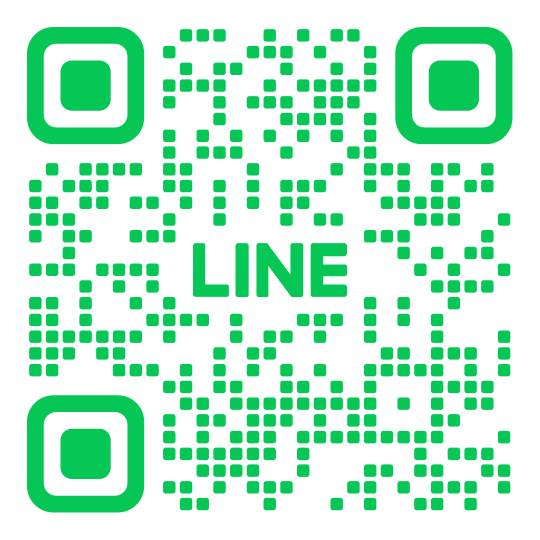

無料相談・お問い合わせ
プランが決まっていなくても、
相談できます。
プラン、原稿、写真、公開時期がすべて決まっていなくても大丈夫です。2つのヒアリングのどちらかに分かる範囲で答えてください。そのあとは公式LINEでやり取りします。
- 相談料
- 無料
- 返信の目安
- （公開前に確定: 返信目安）
- 営業日
- （公開前に確定: 営業日）
送信したあとの流れ
- ヒアリングに答える分かる範囲で構いません。送信すると受付番号が出ます。
- 公式LINEで受付番号を送る足りない内容をLINEで伺います。必要なら Zoom でも。
- 確認PDFを受け取る「こう理解しました」をまとめたPDFを、LINEでお送りします。
- 見積もりPDFの内容が合っていることを確かめてから。送信だけで契約にはなりません。
2つのヒアリングから、近いほうを選んでください
どちらもこのサイトの中のページで、相談は無料です。入力の途中はこの端末に下書きとして残ります。どちらから始めても、最後は公式LINEで内容を確かめてから確認PDFをお送りします。迷ったら、はじめての方ヒアリングで構いません。
何から決めればよいか、まだ分からない方
はじめての方ヒアリング
どんなサイトが合いそうかを、選ぶだけで答えられる15問で伺います。約3分・必須は2問です。詳しいことは、送信後に公式LINEで伺います。
はじめての方ヒアリングを開く作りたいサイトが、ある程度決まっている方
本格ヒアリング
ページ、原稿、デザイン、写真の受け渡し、プランの選択まで、制作と見積もりに必要なことを最大14の段階で伺います。約25〜40分。分からない項目は空欄のまま送れます。
本格ヒアリングを開く公式LINE
ヒアリングを送ったあとのやり取りは、公式LINEで行います。返信する時間は 日・月〜金 10:00〜18:00（土曜は休み）です。確認PDFと見積もりは、内容がそろってから2週間以内にお送りします。

フォームやLINEを使わずに相談したいとき
メール （公開前に確定: メール） でも受け付けます。件名に「Web制作の相談」と書いて、分かる範囲でお送りください。
受付と返信
営業日 （公開前に確定: 営業日）
返信の目安 （公開前に確定: 返信目安）
相談の前に見ておくと早いもの
入力していただく主な項目 — お名前、事業名、連絡方法、業種、Webサイトの目的、見てほしいお客さん、素材の有無、希望の時期、気になるプラン、診断結果のタイプ（送ると選んだときだけ）、自由記入。分かる範囲で構いません。
送信＝契約ではありません — フォーム送信は契約の申込み確定ではありません。内容確認と見積もり・制作条件への同意後に契約となります。
個人情報の利用目的 — 入力いただいた情報は、お問い合わせへの回答、見積もり、制作内容の確認、契約・連絡のために利用します。詳しくはプライバシーポリシーをご確認ください。